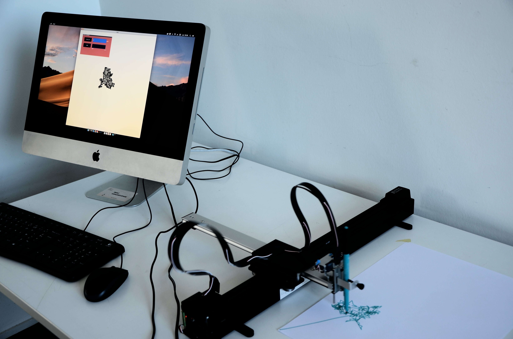
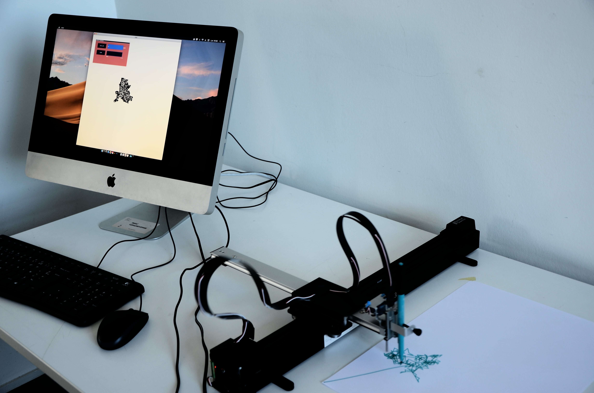

Ant_footprint aims to simulate organisms governed by rules
called algorithms. By experimenting with them in an application,
these become tangible through a small robotic installation.
Each experiment defines a new algorithm that will be executed
graphically on the screen and then via the robotic installation.
The algorithms are materialised in two ways:
1) Through a graphic result .
2) By the movement produced by the installation.
 
